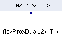

represents prox for a L2 non-data term More...
#include <flexProxDualL2.h>
Inheritance diagram for flexProxDualL2< T >:

Classes | |
| struct | flexProxDualL2Functor |
Public Member Functions | |
| void | applyProx (T alpha, flexBoxData< T > *data, const std::vector< int > &dualNumbers, const std::vector< int > &primalNumbers) |
| applies prox for non-data terms More... | |
| void | applyProx (T alpha, flexBoxData< T > *data, const std::vector< int > &dualNumbers, const std::vector< int > &primalNumbers, std::vector< Tdata > &fList) |
| applies prox for data terms More... | |
 Public Member Functions inherited from flexProx< T > Public Member Functions inherited from flexProx< T > | |
| flexProx (prox aP) | |
| initializes the prox More... | |
| prox | getProx () |
| returns the type of prox More... | |
Additional Inherited Members | |
| Public Attributes inherited from flexProx< T > | |
| const prox | p |
| type of prox More... | |
Detailed Description
template<typename T>
class flexProxDualL2< T >
represents prox for a L2 non-data term
Member Function Documentation
◆ applyProx() [1/2]
template<typename T >
|
inlinevirtual |
applies prox for non-data terms
the function body should be empty if implemented prox is a data prox
- Parameters
-
alpha weight of term data data object dualNumbers vector of internal identifactions of dual numbers corresponding to the term
- See also
- flexBox
- Parameters
-
primalNumbers vector of internal identifactions of primal numbers corresponding to the term
- See also
- flexBox
Implements flexProx< T >.
◆ applyProx() [2/2]
template<typename T >
|
inlinevirtual |
applies prox for data terms
the function body should be empty if implemented prox is a non-data prox
- Parameters
-
alpha weight of term data data object dualNumbers vector of internal identifactions of dual numbers corresponding to the term
- See also
- flexBox
- Parameters
-
primalNumbers vector of internal identifactions of primal numbers corresponding to the term
- See also
- flexBox
- Parameters
-
fList data part of term
Implements flexProx< T >.
The documentation for this class was generated from the following file: